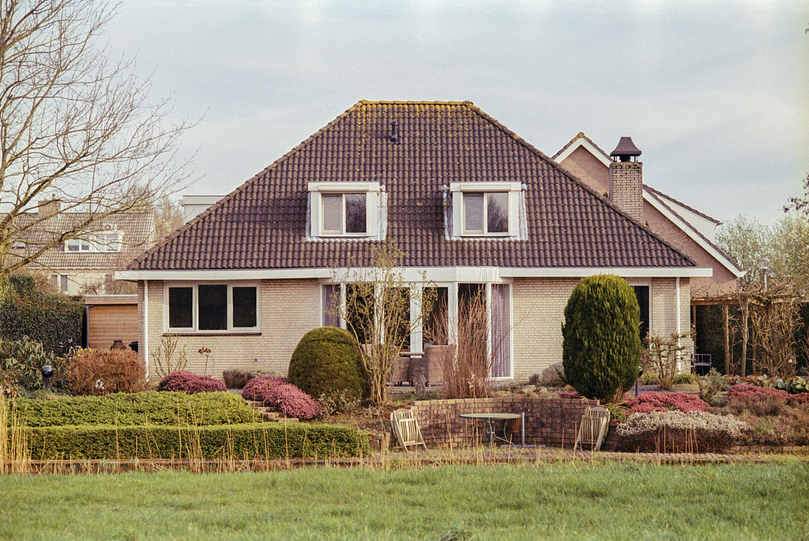

Trinkelių klojimas ir kiemo įrengimas
Atliekame pagrindo paruošimo, trinkelių klojimo, bortelių montavimo ir kitus kiemo tvarkymo darbus.
Demo projektas
Ką atliekame
-
Įrengiame trinkelių dangas kiemuose, įvažiavimuose, terasose ir kituose sklypo plotuose. Storį parenkame pagal apkrovą, siūles užpildome smėliu ir dangą suvibruojame.
-
Nukasame augalinį sluoksnį, išvežame gruntą, klojame geotekstilę, skaldą tankiname sluoksniais. Nuo pagrindo priklauso, ar danga po kelių žiemų neįdubs.
-
Kelio, šaligatvio ir vejos borteliai ant betono pado. Jie laiko dangos kraštą, kad trinkelės neišsiskirstytų, ir atskiria taką nuo vejos.
-
Suplanuojame vietą automobiliams, posūkius ir nuolydžius nuo namo. Įvažiavimui klojame storesnes trinkeles ir darome tvirtesnį pagrindą.
-
Takai nuo vartų iki durų, aplink namą ar į sodą. Parenkame patogų plotį ir kraštą, kad veja neužaugtų ant tako.
-
Nuolydžiai nuo pastato, linijiniai latakai prie garažo, lietaus šulinėliai ir prijungimas prie esamos sistemos ar drenažo.
-
Išardome įdubusią vietą, sutvarkome pagrindą ir sudedame tas pačias trinkeles atgal. Suskilusias pakeičiame naujomis.

Kiemo planuoklis
Pasirinkite dangą, nurodykite matmenis ir matykite orientacinę kainą. Tikslią kainą pasakysime apžiūrėję vietą.
Kainos išskaidymas, prielaidos ir kas neįeina
| Darbai ir medžiagos | Nuo | Iki |
|---|---|---|
| Iš viso | — | — |
Neįeina
- Latakai, šulinėliai, drenažas.
- Senos dangos ardymas ir išvežimas.
- Atraminės sienelės, laiptai.
- Vejos atkūrimas.
Svarbu
Tai orientacinis skaičiavimas, ne pasiūlymas. Kaina priklauso nuo grunto, aukščių, privažiavimo ir gamintojo. Pagrindo storį ir dangos tinkamumą nustatome tik apžiūrėję vietą.
Darbų pavyzdžiai
Pavyzdiniai objektai
Prieš ir po
Tas pats sklypas iš viršaus: žvyras su provėžomis ir vanduo prie garažo, o šalia ta pati vieta įrengus trinkelių dangą su borteliais ir lataku.
Schema, ne nuotrauka. Vilkite slankiklį arba naudokite rodyklių klavišus.
Apie mus
Įrengiame kiemus, įvažiavimus ir takus privačių namų savininkams. Žemės darbus ir klojimą atlieka ta pati komanda su savo technika.
- Vienas kontaktas
- Nuo apžiūros iki darbų pabaigos.
- Sąmata raštu
- Išskaidyta pagal darbus ir medžiagas.
- Mokėjimas etapais
- Ne visa suma iš anksto.
- Kur dirbame
- —
Kas po trinkelėmis
Tinkamai paruoštas pagrindas lemia, ar danga ilgai išliks lygi. Paspauskite sluoksnį.
Kaip vyksta darbai
- 01UžklausaVieta, plotas, ko norite.
- 02ApžiūraMatavimai, gruntas, aukščiai.
- 03SąmataRaštu, su terminu.
- 04PagrindasKasimas, borteliai, skalda.
- 05KlojimasTrinkelės, siūlės, vibravimas.
- 06SutvarkymasAtliekos išvežamos.
Dažni klausimai
Kodėl kaina rodoma intervalu?
Internetu nematyti, kiek grunto reikės išvežti, ar sklypas lygus ir ar privažiuos sunkvežimis. Tikslią sumą pateikiame po apžiūros.
Kada geriausia kloti trinkeles?
Kai gruntas neįšalęs, dažniausiai nuo balandžio iki lapkričio. Pavasarį kalendorius užsipildo greičiausiai.
Ar galima kloti ant seno pagrindo?
Kartais, jei jis tvirtas ir nesuslūgęs. Įvertiname apžiūros metu.
Ar klojate mano nupirktas trinkeles?
Taip. Prieš pirkdami pasitarkite dėl kiekio ir storio: įvažiavimui reikia storesnių trinkelių.
Ar reikia leidimo įvažiavimui?
Savo sklype paprastai ne. Jei įvažiavimas jungiasi prie gatvės ar šaligatvio, tą dalį gali tekti suderinti su savivaldybe.
Užklausa
Palikite savo duomenis — susisieksime ir aptarsime darbus.